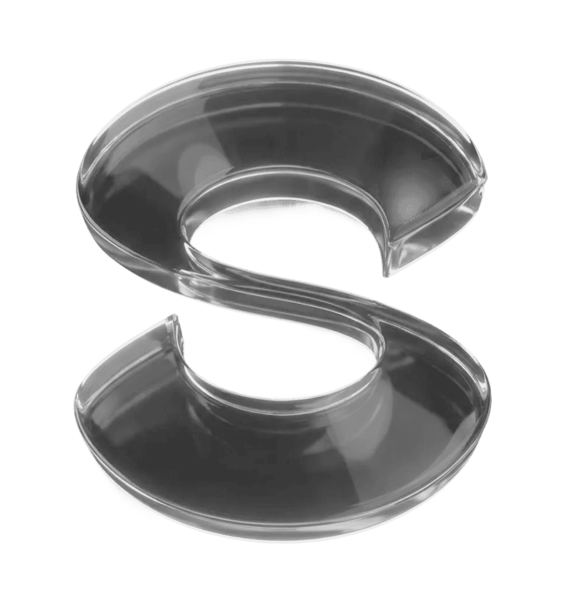
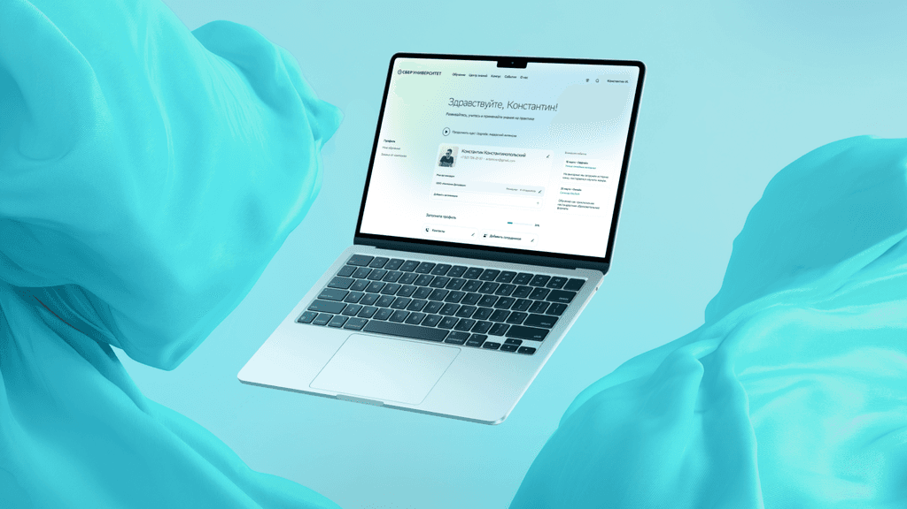
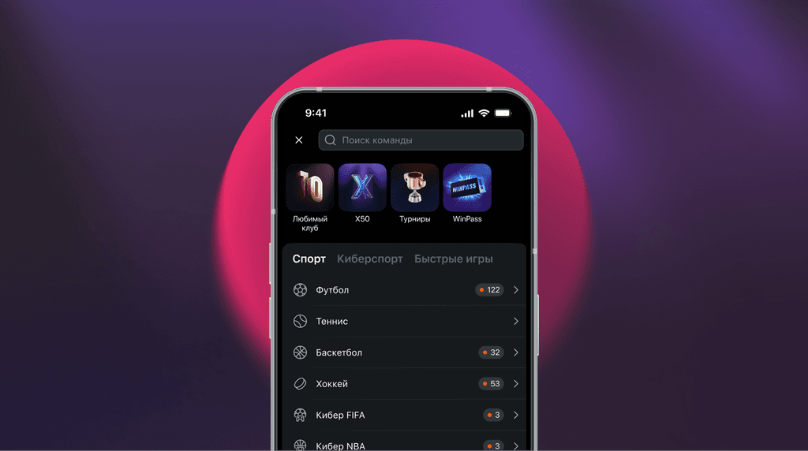
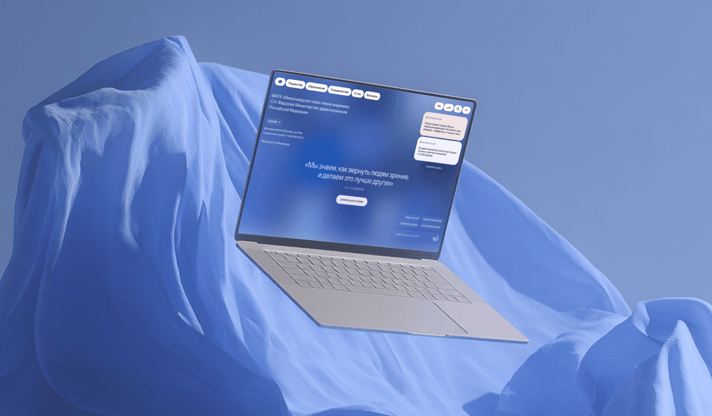
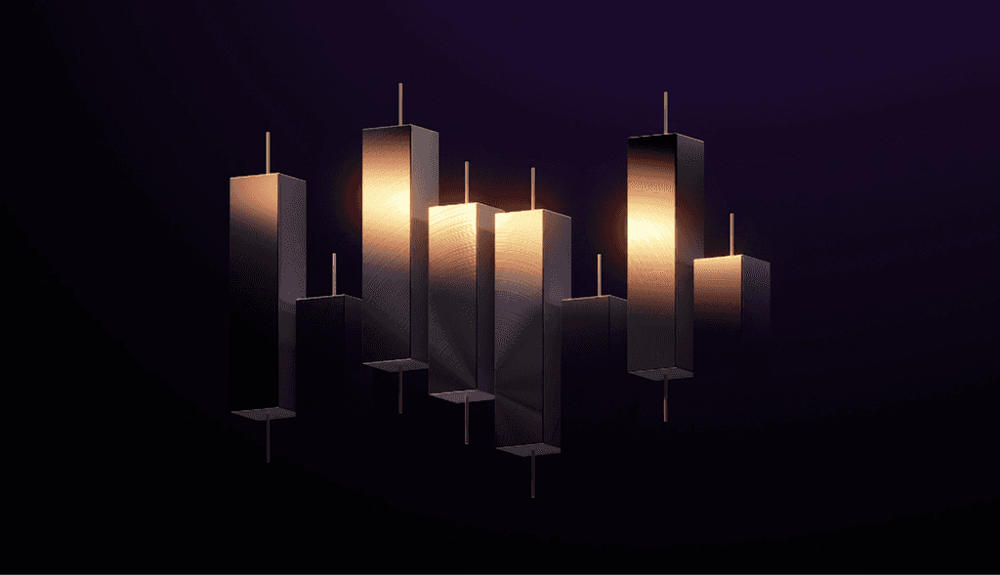
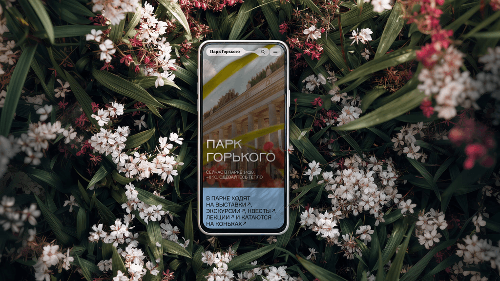
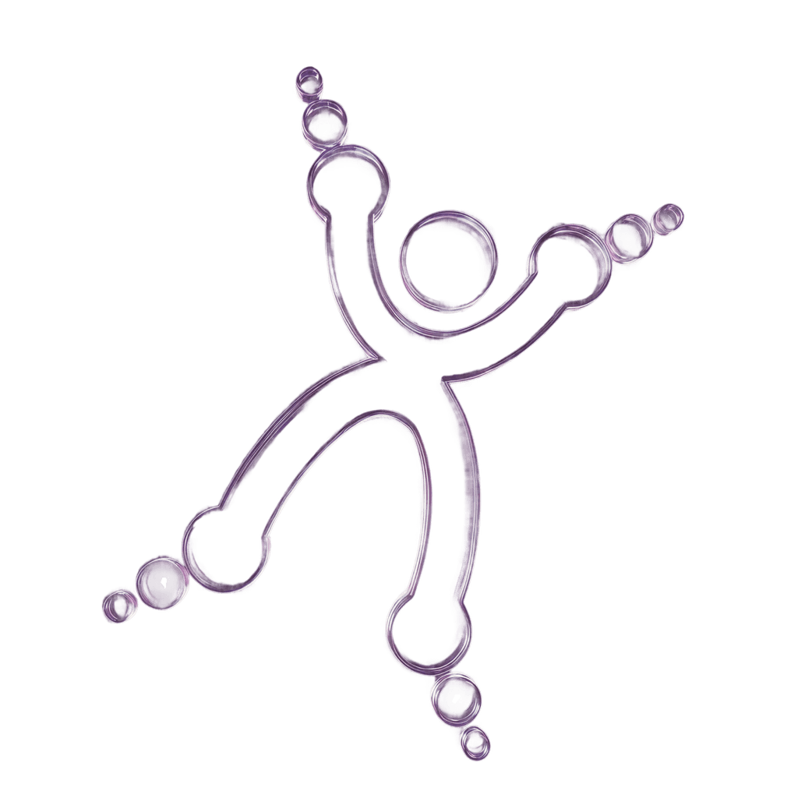
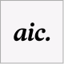
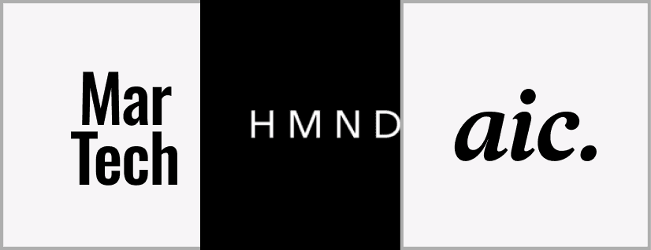

Парк Горького
- Sreda
- Рейтинг Рунета
Продуктовый дизайнер
Делаю продуктовые интерфейсы со смыслом.

Сберуниверситет
Winline
МНТК
Финам
Парк ГорькогоNCILSНациональный центрПереработал подачу заявки и синхронизировал сценарии для разных пользователей.
Переосмыслил визуальный язык, добавил геймификацию и эмоциональный дизайн.
Сделал редизайн с акцентом на лёгкость восприятия и интуитивную навигацию.
Перевёл визуальную концепцию в компоненты, фотостиль и набор иконок.
Отрисовал страницы, интерактивную карту и набор иконок для проекта.
Разработал сайт на Tilda. Проект занял первое место в конкурсе «Золотой сайт».
Работал в компаниях


Проектирую сайты и приложения, собираю прототипы и дизайн-системы. Учитываю задачи бизнеса и технические ограничения, презентую решения клиентам и сопровождаю разработку.

